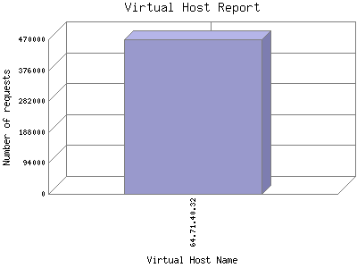

Analog 5.24
Analog 5.24 Report Magic for Analog 2.13
Report Magic for Analog 2.13The Virtual Host report provides summary information about the virtual hosts (or sub-host or sub-domain) that are hosted within your site. This is especially useful as an ISP to monitor the usage and traffic on each of the domains you host.
This report shows the first 20 results by bytes of traffic. This report is sorted by amount of bytes transferred.

| Virtual Host Name | Number of requests | Percentage of the bytes | |
|---|---|---|---|
| 1. | 64.71.40.32 | 468,645 | 100% |
This report was generated on April 3, 2016 02:21.
Report time frame August 18, 2011 04:50 to March 6, 2016 00:23.
| Web statistics report produced by: | |
| Analog 5.24 | Report Magic for Analog 2.13 |